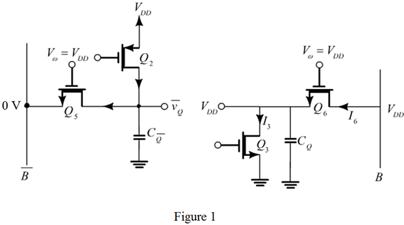

In the case of writing a 1 into a 6T SRAM cell that is originally storing a 0,  is lowered to 0 and then raised to
is lowered to 0 and then raised to  .
.
Draw the relevant parts of the 6T SRAM circuit to explain this operation.

To write 1, the  line is raised to
line is raised to  and is lowered to 0. When line voltage is lowered,
and is lowered to 0. When line voltage is lowered,  conducts and discharges to 0 V. Similarly, when B voltage is increased to , conducts and charges . The results are the same as that for writing a 0 because transistors are active in this process.
conducts and discharges to 0 V. Similarly, when B voltage is increased to , conducts and charges . The results are the same as that for writing a 0 because transistors are active in this process.
Thus, the sketch for the relevant parts of the 6T SRAM circuit to write a 1 is shown in Figure 1.